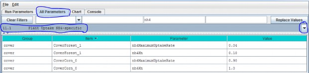
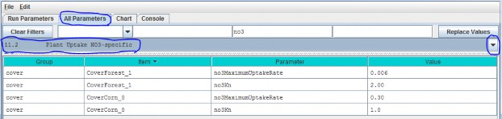
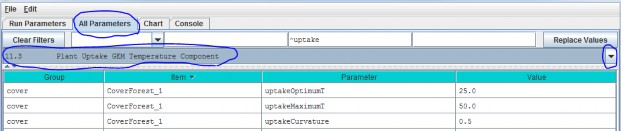
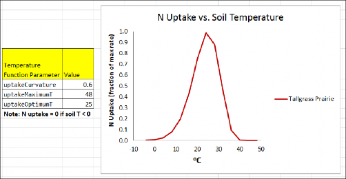
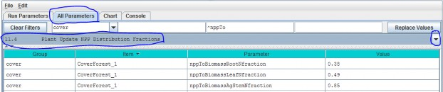
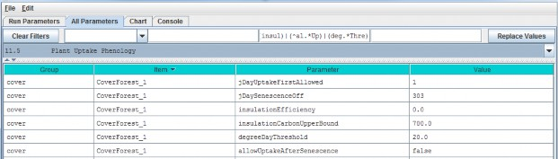

Plant Uptake
The VELMA v1.0 subroutine for plant nitrogen uptake is described by Abdelnour et al. (2011). VELMA v2.0 generallyfollows the same subroutine, but includes important changes to several components affecting nitrogen uptake:
- Uptake of NH4 and NO3 is now modeled explicitly, using pool-specific Michaelis- Mentenequations.
- The temperature response function for plant N uptake is now based on a quadratic equation described byRastetter et al. (1991).
- In VELMA v1.0 a constant root fraction parameter was applied to total plant biomass to indirectlysimulate effects of successional changes in root biomass on N uptake. VELMA v2.0 includes a leaf-stem-root (LSR)subroutine that explicitly models root biomass dynamics and consequent effects on NH4 and NO3uptake.
- Simulated total N uptake per day is allocated to leaf, stem and root tissues according to specified fractionsper tissue.
- Phenological controls on plant nitrogen uptake constrain when nitrogen uptake can occur.
- The nonlinear (Weibull) function in VELMA v1.0 for simulating the effect of forest stand age on N uptake hasbeen removed. This and other age-related effects in VELMA v2.0 are now modeled as a consequence of successionalchanges in the availabilities of nitrogen and water.
- The VELMA v2.0 plant N uptake subroutine must be set up and calibrated for each cover species/types within awatershed.
Details are provided in subsections 11.1 - 11.5.
11.1 - Plant Uptake NH4-specific
Select "11.1 Plant Uptake NH4-specific" from the All Parameters drop-down menu to specify parameter valuescontrolling NH4 uptake per cover species/type. Note that two cover types (forest and corn) are shown hereto emphasize that parameters must be specified for each cover type within a watershed (true for all of section11).

Parameter Definitions
| Parameter Name | Parameter Description |
|---|---|
| nh4MaximumUptakeRate | Cover-specific maximum rate of NH4 uptake for biomass uptake equation. |
| nh4Kn | Half saturation constant kn for Michaelis Menton NH4 uptake in gN/m^2. |
See calibration notes for section 11.2.
11.2 - Plant Uptake NO3-specific
Select "11.2 Plant Uptake NO3-specific" from the All Parameters drop-down menu to specify parameter valuescontrolling NO3 uptake per cover species/type:

Parameter Definitions
| Parameter Name | Parameter Description |
|---|---|
| no3MaximumUptakeRate | Cover-specific maximum rate of NO3 uptake for biomass uptake equation. |
| no3Kn | Half saturation constant, kn, for Michaelis-Menten NO3 uptake in gN/m^2. |
Calibration Notes
We have prepared a DRAFT Excel spreadsheet that you may choose to use to calibrate NH4 and NO3 plant uptake parameters for your site.
Filename: VELMA 2.0_Nitrogen Uptake Calibrator (CHB Forest)_9-24-13.xlsx Folder location:VELMA2.0Software/SupportingDocuments/ExcelCalibrationFiles
11.3 - Plant Uptake GEM Temperature Component
Select "11.3 Plant Uptake GEM Temperature Component" from the All Parameters drop-down menu to specifyparameter values for the temperature response function affecting NH4 and NO3 uptake (specify percover type):

Parameter Definitions
(see Rastetter et al. (1991) for a description of the General Ecosystem Model (GEM)temperature function and parameters for simulating plant nitrogen uptake):
| Parameter Name | Parameter Description |
|---|---|
| uptakeOptimumT | Optimal temperature (oC) plant uptake of NH4 and NO3 |
| uptakeMaximumTMaximum | temperature (oC) plant uptake of NH4 and NO3 |
| uptakeCurvatureCurvature | parameter of GEM temperature function. |
An example:

Calibration Notes
We have prepared a DRAFT Excel spreadsheet that you may choose to use to calibrate temperatureresponse functions for plant N uptake and other temperature sensitive processes in VELMA.
Filename: VELMA 2.0_Temperature & Moisture Response Functions_9-8-14.xlsx Folder location:VELMA Model\Supporting Documents\Excel Calibration Files
References
Rastetter, E. B., Ryan, M. G., Shaver, G. R., Melillo, J. M., Nadelhoffer, K. J., Hobbie, J. E., & Aber, J.D. (1991). A general biogeochemical model describing the responses of the C and N cycles in terrestrialecosystems to changes in CO2, climate, and N deposition. Tree Physiology, 9(1-2), 101-126.
11.4 - Plant Uptake NPP Distribution Fractions
Select "11.4 Plant Uptake NPP Distribution Fractions" from the All Parameters drop-down menu to specify parametervalues controlling how daily total N uptake (a.k.a, "NPP" in VELMA) is allocated to leaf, aboveground stem,belowground stem, and root biomass:

Parameter Definitions
| Parameter Name | Parameter Description |
|---|---|
| nppToBiomassRootNfraction | The fraction (0.0 -1.0) of total plant uptake of nitrogen (NH4 + NO3) per day allocated to the root biomass N pool. |
| nppToBiomassLeafNfraction | The fraction (0.0 -1.0) of total plant uptake of nitrogen (NH4 + NO3) per day allocated to the leaf biomass N pool. |
| nppToBiomassAgStemNfraction | The fraction (0.0 -1.0) of total plant uptake of nitrogen (NH4 + NO3) per day allocated to the AgStem biomass N pool. |
Note that "nppToBiomassBgStemfraction" does not need to be specified because VELMA internally calculates it bydifference.
Calibration Notes
Figure 1 and Appendix 1 provides conceptual diagrams and equations describing how N uptake (NPP) is allocated among the four LSR plant tissues.
To calibrate the N allocation parameters described in this section, we recommend constructing an annual plantbiomass N budget(s) for all four LSR tissues per cover type. Observed data and estimates can usually be found inthe literature for this. For example:
- Leaf litterfall data can be used to estimate annual leaf NPP, usually as dry weight or carbon, so you will alsoneed C/N data to calculate annual N uptake.
- Data for above- and belowground stem biomass growth can be obtained from tree- ring data and allometric biomassequations for forest cover types, or from "destructive" biomass harvest methods in grasslands or agriculturalplots.
- Production estimates for fine roots exist for many cover types, and are based on a variety of methods - e.g.,see Nadelhoffer, K. J., & Raich, J. W. (1992).
References
Nadelhoffer, K. J., & Raich, J. W. (1992). Fine root production estimates and belowground carbon allocationin forest ecosystems. Ecology, 1139-1147
11.5 - Plant Uptake Phenology
Select "11.5 Plant Uptake Phenology" from the All Parameters drop-down menu to specify parameter values affectingwhen plant N uptake begins and ends during the year (per cover type):

Parameter Definitions
| Parameter Name | Parameter Description |
|---|---|
| jDayUptakeFirstAllowed | The first Julian day of the year on which uptake is possible for this Cover. Uptake will NEVER happen before the specified day. Use this parameter to delay uptake until the dailyphotoperiod is sufficient for the given Cover. This parameter specifies the first day of the year when uptakecan occur not necessarily the first day when uptake will occur. On and after the day specified by this parameteruptake will occur whenever the degree day parameterization allows it to begin. |
| jDaySenescenceOff | The Julian Day of the year when this cover species biomass stops senescing (Note: any value >= 367 results in biomass NOT senescing through the end of theyear.nppToBiomassAgStemNfraction The fraction (0.0 -1.0) of total plant uptake of nitrogen(NH4 + NO3) per day allocated to the AgStem biomass N pool. |
| insulationEfficiency | Insulating efficiency of available litter range [0.0 1.0] (this affects soil temperature and, therefore, plant N uptake). NOTE: Set this value to zero to disable insulationeffects on degree- day calculation. |
| insulationCarbonUpperBound | Quantity of above-ground litter beyond which there is no additional insulating effect in gC/m^2 (this affects soil temperature and, therefore, plant N uptake). |
| degreeDayThreshold | Allow biomass uptake only when accumulated degree day value >= degreeDayThreshold. |
| allowUptakeAfterSenescence | When set true (default) uptake takes place before jDaySenescenceOn and resumes after jDaySenescenceOff. When set "false" uptake occurs ONLY beforejDaySenescenceOn |